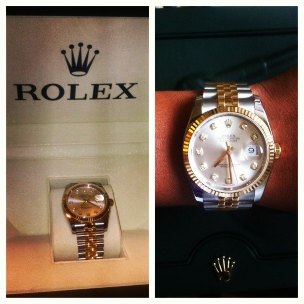

Federer has been an ambassador for Rolex since 2006 when the watch brand signed
him in a reported £10 million deal. With Federer’s title-winning skills drawing in a large audience via broadcast-
ing, it’s no surprise Rolex sought out Federer’s endorsement.

This athelete broke into the world of golf and created turmoil. He stayed at number 1 and won quite a few tournaments just because'GIVING UP ISN'T IN HIS DNA'.
David and Victoria Beckham are not only extremely successful in their respective fields, but are also one of the most stylish celeb couples out there. The retired soccer superstar and the fashion designer always look on-point whenever they are photographed, whether it’s at the airport, at a sports match, front row at a fashion show, or just hanging out with their kids.

Back9Network correspondent and ambassador Cheynenne Woods signed a deal on Tuesday with watchmaker Rolex to become one of their global ambassadors. Woods joins her uncle Tiger as part of the cluster of outstanding golfing names associated with the iconic timepiece, as well as Phil Mickelson, Luke Donald and Yani Tseng.
Golfer Phil Mickelson has been long noted as one of the best golfers in the world. A resident and native of San Diego County, it was recently reported by Sports Illustrated that he made $60.8 million in 2011. His earnings had much to do with the fact that he is sponsored by major brands including Callaway Golf, KPMG, Barclays, Rolex, and Exxon Mobil.